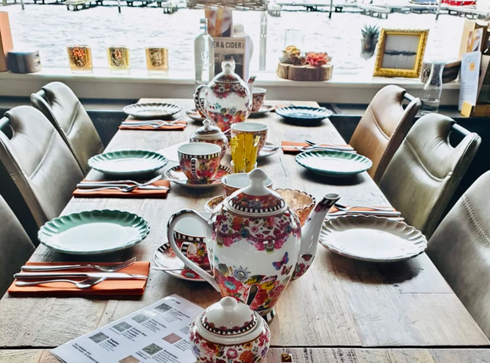

High tea
26,50 per persoon
Thee in diverse smaken en soorten. Eerst een ronde met huisgemaakte zoete hapjes, gevolgd door een hartige ronde en als afsluiter een klein dessert.
- Geen vaste dagen, reserveren vanaf 2 personen
- Starttijd tussen 12.00 en 15.00 uur, duur ongeveer 2 uur
- Themagerelateerd, gluten- en/of lactosevrij tegen meerprijs